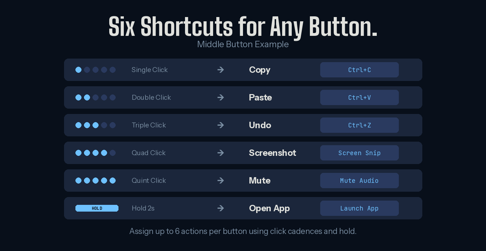

What's new in MouseKey 2.1
Hold-to-trigger actions
Any mouse button can now fire an action when you hold it for 2 seconds. This adds a sixth action slot to every button on top of the existing 5 click cadence levels. Use it for actions you want deliberate access to — launching an app, toggling a mode, or firing a less-frequent shortcut — without worrying about accidental triggers from fast clicks.
With click cadences (single click, double click, triple click, quad click, quint click) plus the new hold action, every button on your mouse now supports up to 6 distinct shortcuts. A basic three-button office mouse with just a middle scroll wheel click gives you 6 programmable actions from that one button alone.

Timed macro recording and playback
MouseKey's built-in macro recorder now captures timing between keystrokes. When you record a macro, MouseKey remembers not just which keys you pressed, but how long you waited between each one. On playback, the macro replays with the same timing. This is an optional feature — useful for workflows where the sequence and pacing of inputs matters, like filling forms, navigating multi-step menus, or executing timed game inputs.
This was one of the most requested features since version 2.0 launched. The recorder still works the same way — select "Create Hot Key" from the action dropdown and start pressing keys — but now it captures the full timing of your input. For macros where timing doesn't matter, the playback is still instant. For macros where it does, the recorded timing is preserved exactly.
When is timed playback useful? Any time a sequence of inputs needs to happen at a specific pace — navigating software menus where each step needs a moment to load, entering data into fields that require tab-then-pause-then-type patterns, or executing multi-input game sequences where order and timing both matter.
Mouse button reassignment
MouseKey can now reassign one mouse button to act as a different mouse button. For example, you can make your back side button behave like a left click, or make your forward side button act as a right click. You can also reassign your left and right click buttons to keyboard shortcuts or other actions for gaming setups. Note that if you override the function of your left or right click, those buttons will perform the new assigned action instead of their default — so plan your layout accordingly.
This is particularly useful for users with mice that have buttons in awkward positions, or for anyone who wants to mirror button functions across their mouse layout. It's also a feature that G Hub and other manufacturer software handle, but MouseKey does it for any mouse brand — not just Logitech or Razer.
Disable any button
You can now disable a mouse button entirely through MouseKey. If a button is causing accidental clicks — like a DPI switch you keep hitting during games, or a tilt wheel you trigger by accident — MouseKey can block it completely. The button simply does nothing while MouseKey is active.
Unlimited profiles with mouse-based switching
MouseKey now supports unlimited profiles, and you can switch between them using a dedicated smart action assigned to any button or click cadence. No need to open the app to change profiles — just assign "Next Profile" to a cadence and cycle through your configurations on the fly. This makes it easy to maintain separate setups for work, gaming, browsing, and creative apps without any friction.
Customize which button turns off MouseKey
In previous versions, holding the middle mouse button for 3 seconds was the only way to toggle MouseKey on and off. Version 2.1 lets you choose which button triggers the disable toggle. If you rely on your middle button for other things — or if your mouse doesn't have one — you can now assign the toggle to any button that works for your setup. Hold it for 2 seconds and MouseKey turns off, returning all buttons to their original function. Hold again to re-enable.
What this means for different users
Version 2.1 touches every part of MouseKey — from how actions trigger, to how macros record, to how you manage profiles and toggle the app. Here's how the new features apply depending on how you use your mouse.
For productivity and office use
The timed macro recorder is a standout for repetitive data entry workflows where you tab through fields at a consistent pace. Profile switching via mouse makes it easy to keep separate button layouts for different apps. And the new hold-to-trigger action gives you a sixth slot per button for less-frequent shortcuts like launching your email client or showing the desktop — reserve click cadences for the high-frequency stuff like copy, paste, undo, screenshot, and mute.
For developers
Timed macros open up multi-step workflows that weren't possible before. Record a sequence like "save file, switch to terminal, run build command" with the natural pauses between steps, and replay it from a single mouse button. Profile switching via mouse means you can have a coding profile, a debugging profile, and a browser testing profile — and cycle between them without leaving your IDE.
For gaming
Button disabling removes accidental DPI switches or tilt-wheel triggers that interrupt gameplay. Button reassignment lets you rearrange your mouse layout without manufacturer software — useful if you're on a mouse that G Hub or Synapse doesn't support well. And the customizable off button means you can quickly return to normal mouse function between matches without hunting for a specific button.
How MouseKey 2.1 compares
With timed macros and button reassignment, MouseKey now covers functionality that previously required either AutoHotkey scripting or manufacturer-specific software like G Hub. The difference remains the same: MouseKey does it through a visual interface with no code, works with any mouse brand, and stays fully offline with zero telemetry.
Here's where MouseKey 2.1 stands against the common alternatives:
- vs G Hub / Synapse: MouseKey works with any mouse, not just one brand. It now matches their button reassignment and macro recording capabilities, without the account requirements, cloud sync, or stability issues.
- vs X-Mouse Button Control: MouseKey still offers click cadences (up to 6 actions per button) that X-Mouse can't match, and the new timed macro recorder is simpler to use than X-Mouse's simulated keystroke editor.
- vs AutoHotkey: Timed macros close one of the biggest gaps. AHK still wins for conditional logic, per-app hotkeys, and keyboard remapping. But for mouse-specific remapping with macro recording, MouseKey now handles it without writing a single line of script.
Full changelog for v2.1
- Hold actions: Assign a 2-second hold trigger to any mouse button for a 6th action slot
- Timed macro recorder: Macro playback now preserves the original timing between keystrokes (optional)
- Button reassignment: Remap any mouse button to act as a different mouse button
- Button disabling: Fully disable any mouse button while MouseKey is active
- Unlimited profiles: No cap on the number of profiles you can create
- Profile switching via mouse: Assign "Next Profile" as a smart action to any button or cadence
- Customize which button turns off MouseKey: Choose which button triggers the MouseKey on/off hold — no longer limited to middle button
How to update
If you already have MouseKey installed from the Microsoft Store, the update should arrive automatically. You can also check for updates manually in the Microsoft Store app. New users can install MouseKey directly from the Store — setup takes under a minute, and your first profile can be configured in seconds.
Check out the demo video to see MouseKey in action, or read the click cadence guide if you're new to the concept.
Get MouseKey 2.1
6 actions per button. Timed macros. Button reassignment. Works with any mouse on Windows.
⊞ Get MouseKey on Microsoft Store